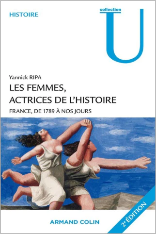

The feminism history
From the french revolution to #MeToo movement passing by Simone Veil, Les femmes, actrices de l’histoire France, de 1789 à nos jours sets out a global vision of feminism through ages.
Front cover of the book Les femmes, actrices de l’histoire France, de 1789 à nos jours.Available here..
Women, actresses of history
Yannick RIPA published in 2010 her book Les femmes, actrices de l’histoire France, de 1789 à nos jours (Women, actrices of history France, from 1789 to nowadays). Through this book, the author and historian traces women's condition history, specifically in France but with an opening to the world. We discover women’s place in society and their daily life during several periods, from the french revolution to the beginning of the 21th century.
The book is very complete and gives many details on the subject, it allows to better understand feminism's origins and tells of numerous fights that women carried out to get rights, forbidden for a long time.
Feminism precursors
During the XVIIIth century, women, like society in general, were divided in order. However, in each order, the difference between men and women is very marked, which is highly due to the lack of instruction for women.
The French revolution appears to women as a hope for their condition. Unfortunately, there were just some feminine registries of grievances and women were quickly removed from politics. The first figures of feminism still appeared like Condorcet, the first theorist of feminism and defender of political women rights, or also Olympe de Gouges, first radical feminist, author of the declaration of rights of the woman and citizen. Even so, women remained big losers of the french revolution, a context which will later lead to the birth of feminism.
A difficult century for feminism
The XIXth century follows the french revolution and it is a difficult period for women’s condition. Indeed, the science in his beginning, proves clumsily the “inferiority of women”, considering them as weak and suffering from hysteria. The creation of civil code worsened the situation, women were dismissed from their liberty and placed under their husband’s domination. At this time, the husband could even use force against his wife.
Women’s condition ends up getting better at the end of the century, a period considered as the great time for women. They get little by little access to more works, for example in the art field. In France, Hubertine Auclert became the first woman to openly call her feminist, a word which is established at this period. Women were then present in the press and many feminist groups were created. At the end of the century, high schools ended up opening to girls and women constituted 38% of the active population.
Women during war
With the beginning of the First World war, women must replace men at work, first in agriculture, then even in industry. They acquired autonomy and in 1918, women workers represented 60% of Citroën personnel for example. However, the situation came back to normal at the end of the war for women. Next, France encountered a demographic crisis which led to the creation of the sadly famous law of 1920 banning abortion and any contraceptive propaganda.
During the Second World war, women’s condition experienced a certain move back because of the Vichy government’s vision. Indeed, he accused the society’s feminisation and liberties given to women as responsible in part for France's loss. The Vichy government came back to a past vision of women considering them only as mothers.
« Women must give birth to children, because there aren't any bad mothers, only bad women who refuse to have children. »
Moreover, women were divided because of resistance. Indeed, some of them are part of it whereas others cooperated with the enemy. Even so, this era is marked by the outcome of Hubertine Auclert ideas because the right of vote for women was adopted the 21st of April 1944, more than 25 years after the United Kingdom.
Read also : Suffragettes, to vote, whatever it takes
A wave’s succession
After the Second world war, the baby boom made its appearance, as a result of the politics encouraging births. The second wave of feminism also appeared little by little with the publication of the book “Le deuxième sexe” (The second sexe) by Simone de Beauvoir, considered as the base of modern feminism. During this era, highly inspired by american women’s lib, main fights of women are free access to contraception methods and abortion. Feminism knew from 1965 to 1985, “the glorious twenties” with several innovations for women’s condition thanks to figures of the movement like Simone Veil or Gisèle Halimi. So, on the 19th of December 1967, contraception was legalised in France then the 30th of November 1975, the law Veil concerning termination was adopted.
Read also : Gisèle Halimi, feminist since birth
From the eighties, the third wave of feminism saw the light of day. The movement is more global but also more dispersed, women defend a lot of causes and intersectional feminism appears. Finally, from 2010, with democratisation of social media and specifically Twitter, a fourth wave of feminism was drawn. Feminism is still intersectional and points out sexual aggressions with famous actions like #MeToo or #Balancetonporc in France. Feminists denounce now rape culture and wages inequalities still very presents while women represened 48.3% Of active population in 2020.
Les femmes, actrices de l’histoire France, de 1789 à nos jours is a well interesting book allowing to trace and have a better global vision of the history of feminism and women in general.
Nowadays
Street interview : what people think about feminism today
class="text__subtitle"